-
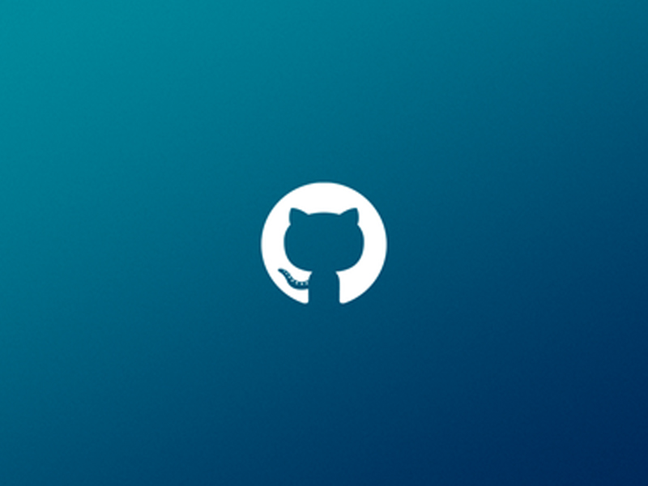
Desafio 1 - Criar o repositório no github
O primeiro desafio consistia em criar uma conta no github e criar um repositório para todos os dias fazer o upload de um novo desafio. Acesse o repositório clicando aqui
-
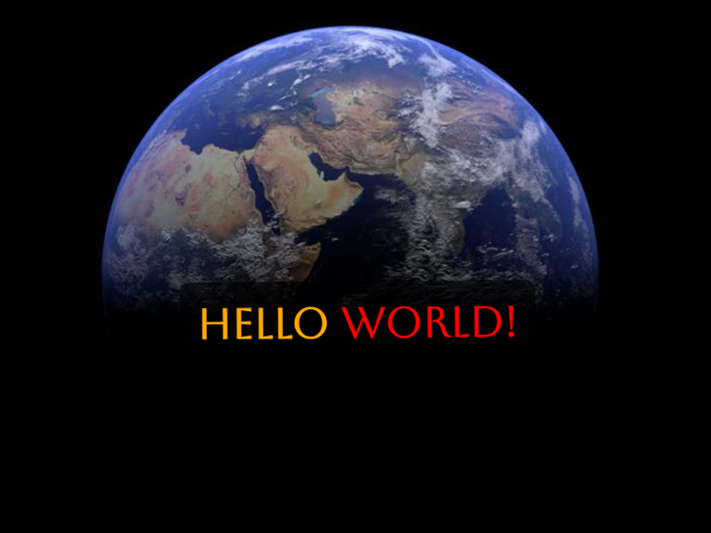
Desafio 2 - Criar uma página "Hello World"
O segundo desafio consistia em criar uma página da internet escrito "Hello World" de forma personalizada.
-
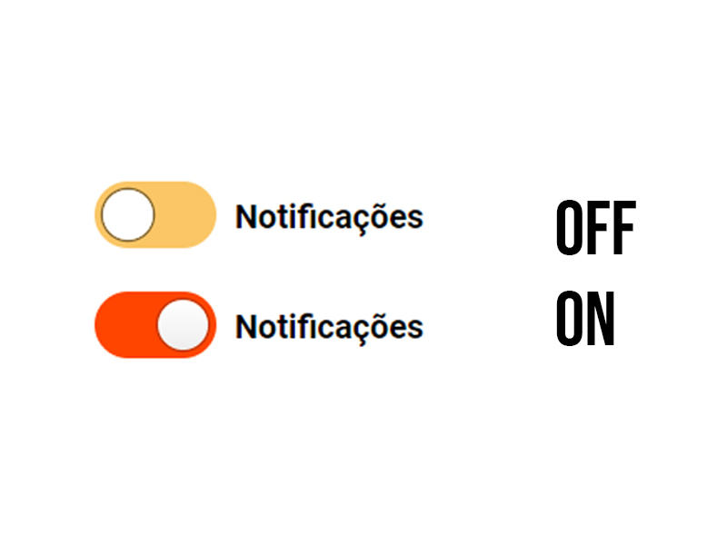
Desafio 3 - Criar um botão animado
O terceiro desafio consistia em criar um botão animado, eu por opção escolhi um Toggle e personalizei usando as cores da minha logo.
-
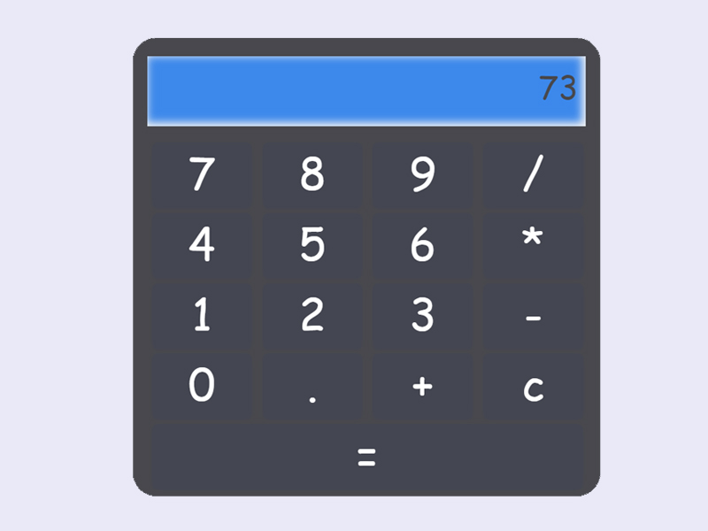
Desafio 4 - Crie uma calculadora
O quarto desafio consistia em criar uma calculadora funcional.
-
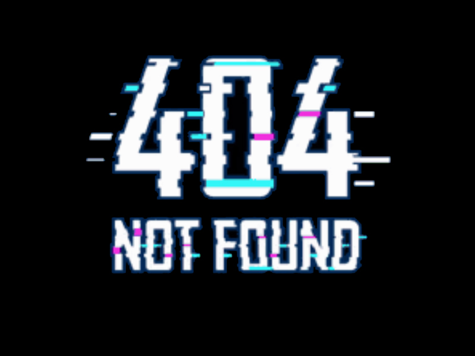
Desafio 5 - Desenvolva uma página customizada para o erro 404
O quinto desafio consistia em criar uma página para ser usada caso aparecesse o erro 404 no navegador.
-
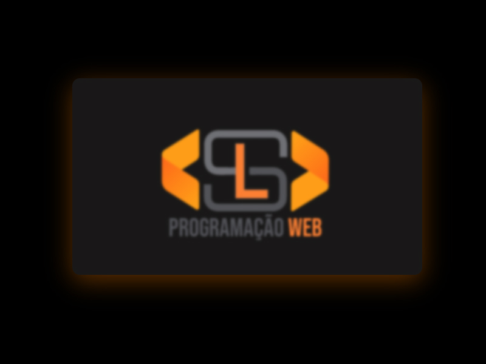
Desafio 6 - Crie um card com o efeito Glassmorphism
O sexto desafio consistia em criar um card com efeito muito interessante eu ainda adicionei um efeito para tornar mais nítido a imagem ao fundo ao passar o mouse e coloquei uma sobra no entorno do card.
-
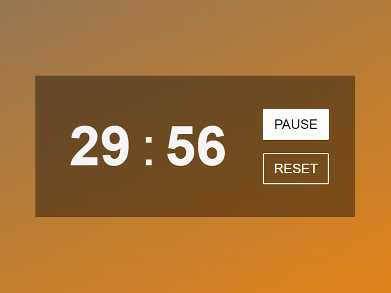
Desafio 7 - Desenvolva um contador
O sétimo desafio consistia em criar um contador ou temporizador.
-
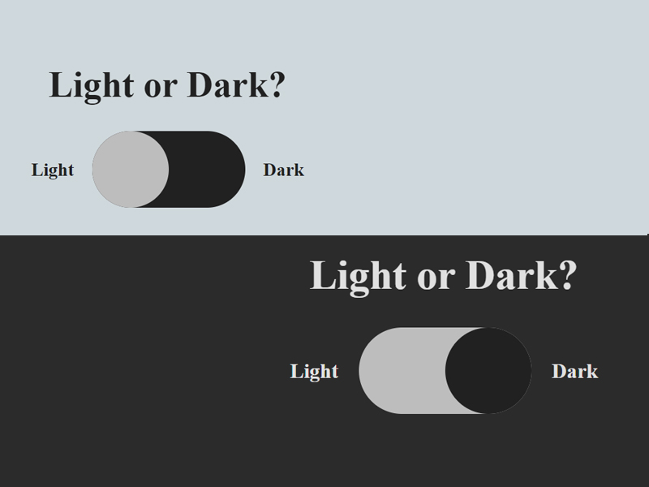
Desafio 8 - Desenvolva um toggle que altere o tema para claro e escuro
O oitavo desafio consistia em criar um botão que permitia mudar o tema da págína de claro para escuro e vice e versa.
-
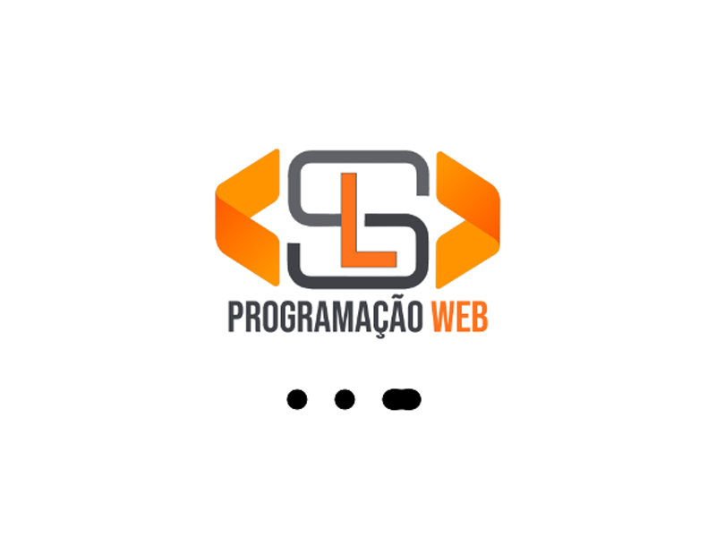
Desafio 9 - Crie uma animação de loading
O nono desafio consistia em criar uma página com efeito de carregamento.
-
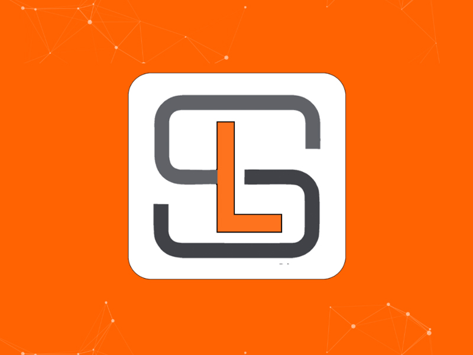
Desafio 10 - Utilize a lib Particle.js do JavaScript
O décimo desafio consistia em criar uma página com efeito de particula.
-
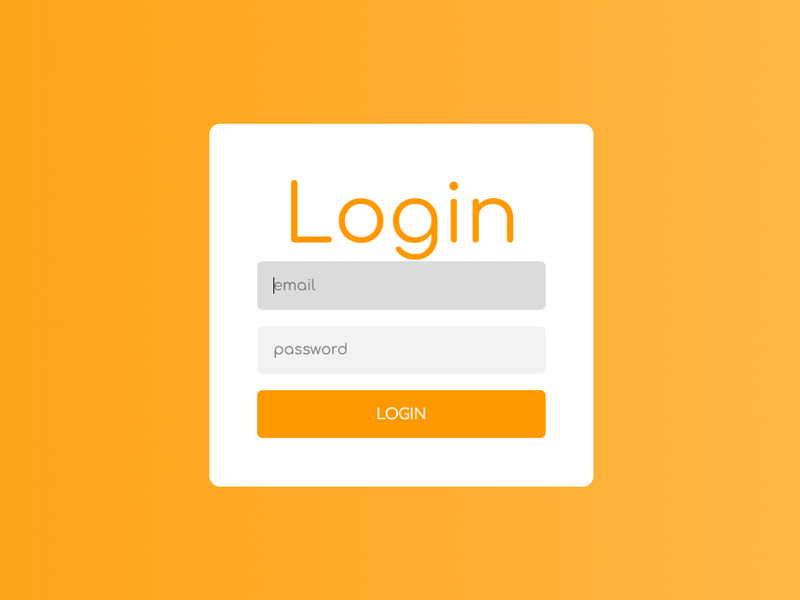
Desafio 11 - Crie o layout de um formulário de login
O décimo primeiro desafio consistia em criar uma página de login com campos para email, senha e um botão para realizar o login.
-
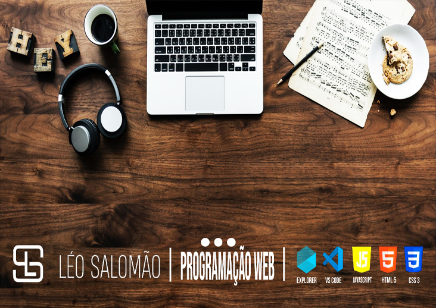
Desafio 12 - Desenvolva uma galeria de imagens
O décimo segundo desafio consistia em criar uma galeria de fotos, onde foi usado um modelo carrossel.
-
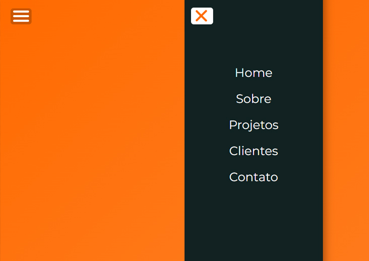
Desafio 13 - Desenvolva um menu responsivo
O décimo terceiro desafio consistia em criar um menu que fosse responsivo. Eu por opção criei um menu através de um botão.
-
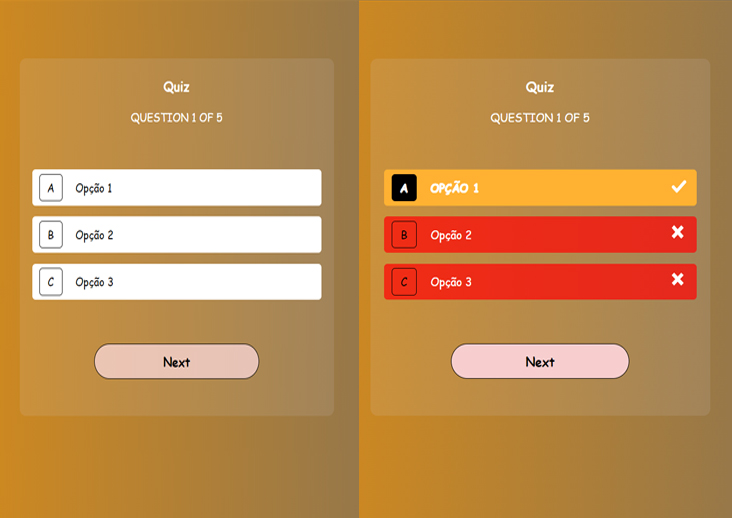
Desafio 14 - Crie um formulário de quizzes
O décimo quarto desafio consistia em criar um card com opções para o usuário escolher onde o mesmo mostraria a resposta correta e as opções erradas.
-
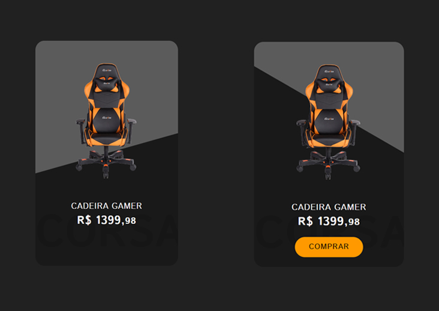
Desafio 15 - Crie um site que exiba produtos como um ecommerce
O décimo quinto desafio consistia em criar uma página de ecommerce, ao qual eu criei apenas um produto por uma questão de tempo.
-
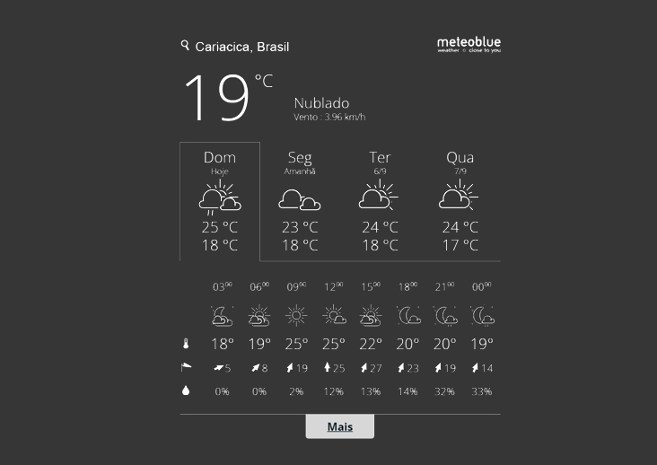
Desafio 16 - Desenvolva um site criando uma API pública
O décimo sexto desafio consistia em criar um site usando uma API pública, a qual eu usei uma API que mostrasse a previsão do tempo.
-
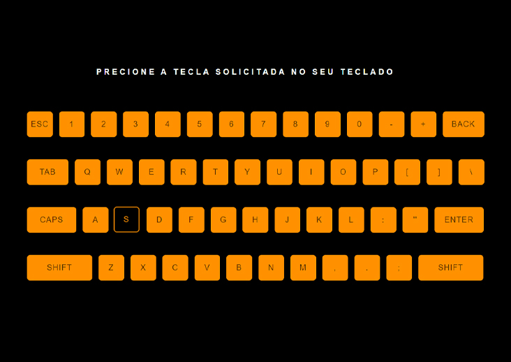
Desafio 17 - Desenvolva um site que capture os eventos do teclado e exiba na tela a tecla pressionada
O décimo sétimo desafio consistia em criar uma página que crie eventos para serem realizados no teclado.
-
Desafio 18 - Desenvolva um gerador de senhas aleatórias
O décimo oitavo desafio consistia em criar uma página que gerasse senhas aleatórias para o usuário utilizar.
-
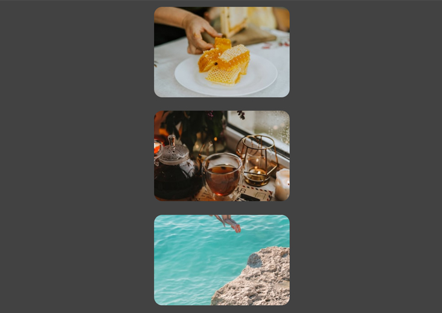
Desafio 19 - Crie um site que gere imagens aleatórias usando a API unsplash
O décimo novo desafio consistia em criar uma página que exibisse imagens aleatórias cada vez que o site fosse carregado pelo navegador.
-
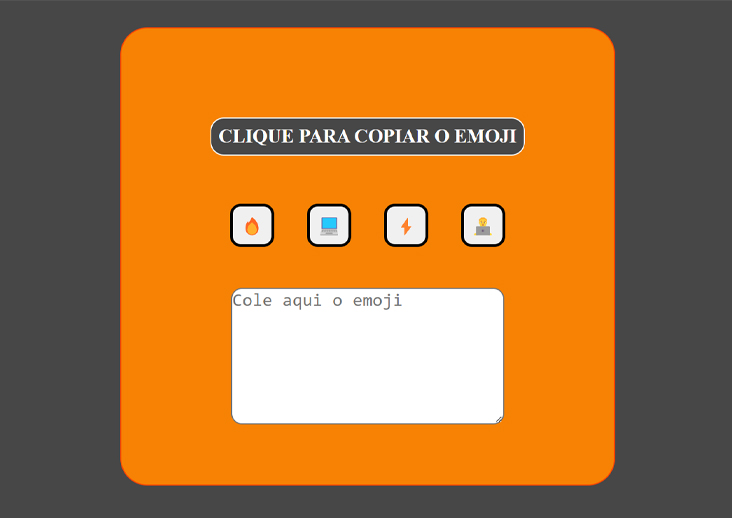
Desafio 20 - Desenvolva um site que exiba emojis que são copiados ao clicar
O vigésimo desafio consistia em criar uma página com emojis que ao clicar em um deles automaticamente o copiaria, permitindo o usuário cola-lo onde desejar usando o ctrl + v.
-
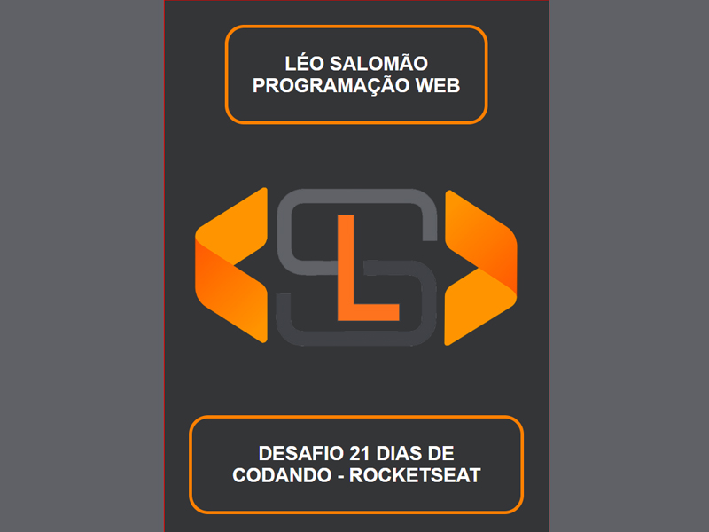
Desafio 21 - Desenvolva um portfólio mostrando os 21 desafios
O vigésimo primeiro desafio consistia em criar este portfólio para mostrar os 21 dias de código realizados.